library(pladdrr)
#> The pladdrr package provides direct access to Praat's DSP capabilities to R usersSee ?pladdrr for an overview and citation information.
#> Use citation('pladdrr') for citing this package in publications.
library(ggplot2)Introduction
pladdrr returns data as data frames
(as_data_frame() methods) and matrices
(as_matrix() methods) that plot directly with
ggplot2, and it also ships a few ggplot2-based
helper functions (plot_powercepstrum(),
plot_powercepstrogram(),
plot_cpp_timeseries(),
create_cepstrum_report()) and
autoplot/autolayer methods for common object
types (Sound, Pitch, Intensity,
Formant, Spectrum, Spectrogram,
Ltas, TextGrid, Harmonicity,
PointProcess, PowerCepstrum).
Plots produced this way are ordinary ggplot2 objects:
they can be saved as PDF/SVG/PNG with ggsave(), themed and
recolored with standard ggplot2 calls, and combined with
gridExtra::grid.arrange() or patchwork.
This vignette demonstrates the plotting functions available in
pladdrr, organized by analysis type.
Cepstral Analysis Visualization
Cepstral analysis is essential for voice quality assessment, particularly for measuring periodicity (CPP - Cepstral Peak Prominence).
Power Cepstrum
Visualize a single power cepstrum with peak detection:
# Create a PowerCepstrum object (Sound -> Spectrum -> PowerCepstrum)
sound <- Sound$new(system.file("extdata", "test.wav", package = "pladdrr"))
cepstrum <- sound$to_spectrum()$to_power_cepstrum()
# Plot with peak annotation
plot_powercepstrum(
cepstrum,
show_peak = TRUE,
show_trendline = TRUE,
fit_method = "exponential decay",
title = "Power Cepstrum with CPP Peak"
)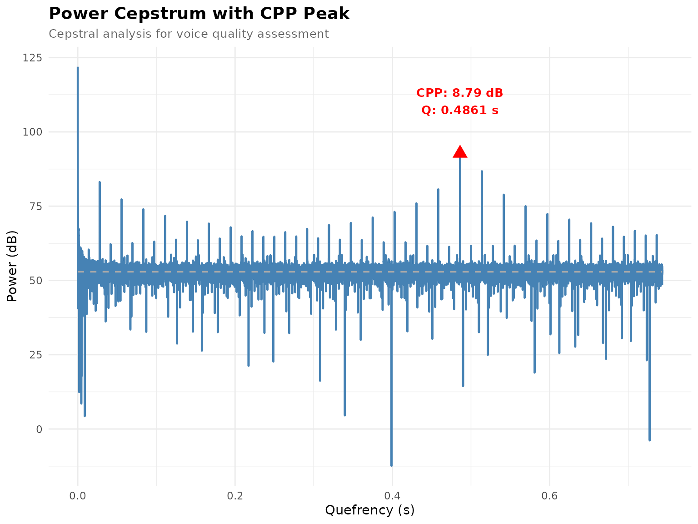
Parameters:
-
show_peak- Highlight the cepstral peak (CPP location) -
show_trendline- Display regression line for trend removal -
fit_method- Trend line type: “straight”, “exponential decay”, or “parabolic” -
quefrency_range- X-axis limits (in seconds) -
db_range- Y-axis limits (in dB) -
theme- ggplot2 theme: “minimal”, “bw”, or “classic”
Power Cepstrogram
Time-varying cepstral analysis (heatmap):
# Create PowerCepstrogram
cepstrogram <- sound$to_powercepstrogram(
pitch_floor = 60,
time_step = 0.002,
maximum_frequency = 5000,
pre_emphasis_frequency = 50
)
# Heatmap visualization
plot_powercepstrogram(
cepstrogram,
quefrency_range = c(0.001, 0.05),
db_range = c(20, 80),
color_scale = "viridis"
)
#> Scale for fill is already present.
#> Adding another scale for fill, which will replace the existing scale.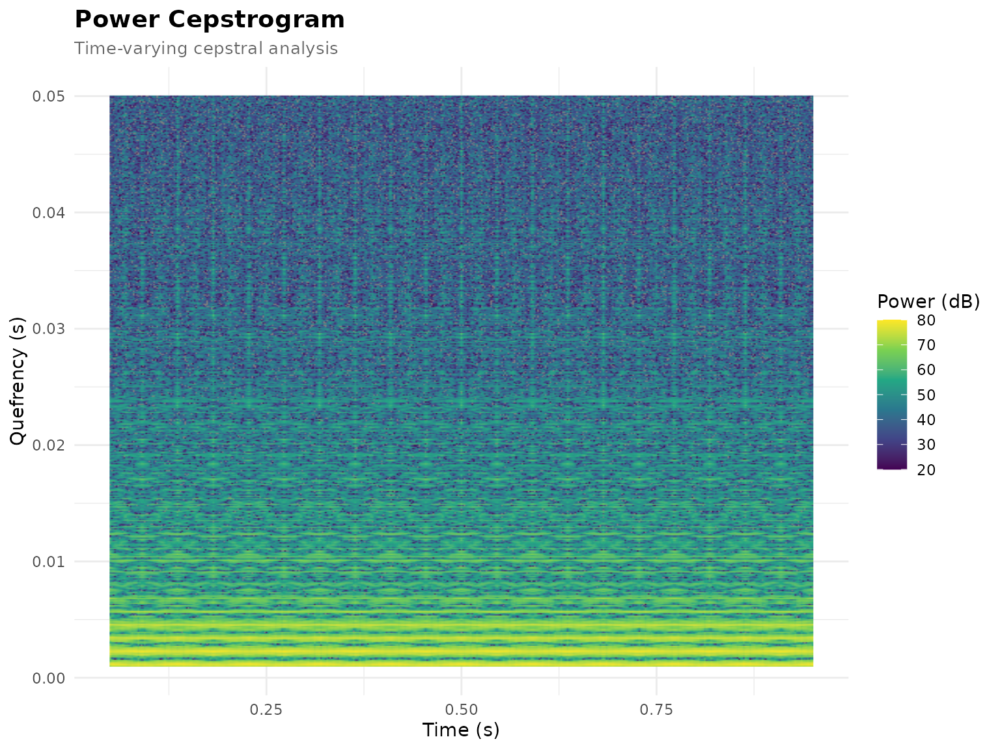
Color scales (color_scale
argument):
- “viridis” (default) - Perceptually uniform, colorblind-friendly
- “magma”, “inferno”, “plasma” - Alternative viridis variants
CPP Time Series
Track Cepstral Peak Prominence over time:
# CPP time series with smoothing
plot_cpp_timeseries(
cepstrogram,
smooth = TRUE,
title = "CPP Over Time"
)
#> `geom_smooth()` using formula = 'y ~ x'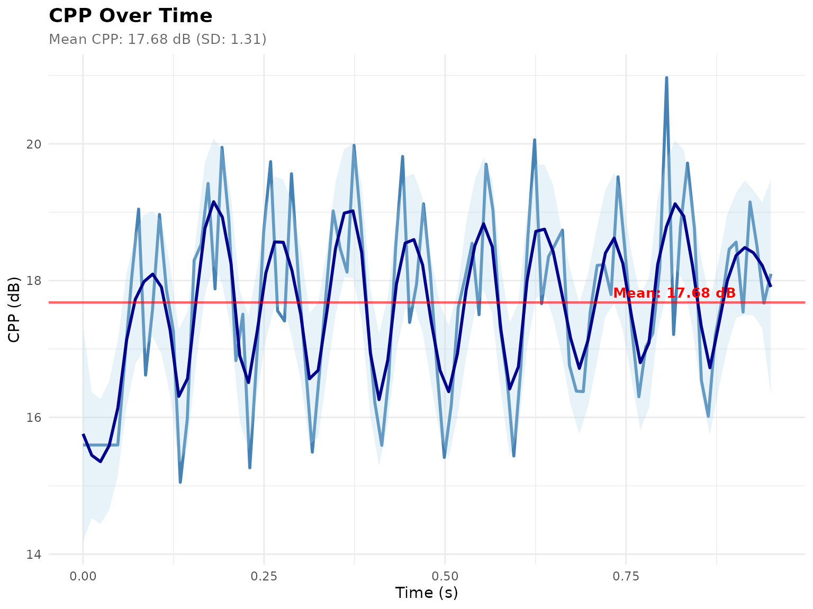
Features:
- CPP values sampled across the cepstrogram’s time range
- Optional loess smoothing (
smooth = TRUE) - Mean CPP reference line (always drawn)
- Optional horizontal reference lines (
reference_linesargument)
Comprehensive Cepstrum Report
Multi-panel diagnostic figure combining all cepstral visualizations:
# Complete cepstral analysis report (power cepstrum + cepstrogram + CPP time series)
report_plot <- create_cepstrum_report(cepstrogram = cepstrogram)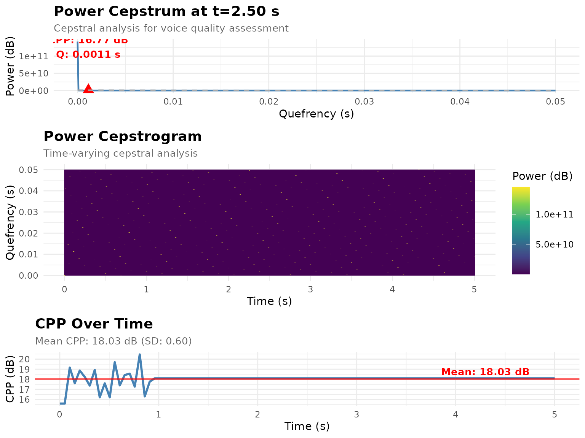
Report panels (stacked with
gridExtra::grid.arrange()):
- PowerCepstrum at a single time slice - with peak and trendline
- PowerCepstrogram - time-quefrency heatmap
- CPP Time Series - CPP values over time
Formant Visualization
F1-F2 Formant Space
F1-F2 plots by segment label (the pattern is the same for vowel-only
data; the bundled test.TextGrid has phone labels, not
exclusively vowels):
# Extract formants at the midpoint of each labeled interval on the "phones" tier
sound <- Sound$new(system.file("extdata", "test.wav", package = "pladdrr"))
textgrid <- TextGrid$new(system.file("extdata", "test.TextGrid", package = "pladdrr"))
formant_data <- data.frame(
vowel = character(),
F1 = numeric(),
F2 = numeric(),
F3 = numeric()
)
tier <- 2 # "phones" tier
formant <- sound$to_formant_burg()
n_intervals <- textgrid$get_number_of_intervals(tier)
for (i in seq_len(n_intervals)) {
label <- textgrid$get_interval_text(tier, i)
if (label != "") {
t_start <- textgrid$get_interval_start_time(tier, i)
t_end <- textgrid$get_interval_end_time(tier, i)
t_mid <- (t_start + t_end) / 2
f1 <- formant$get_value_at_time(1, t_mid, "hertz")
f2 <- formant$get_value_at_time(2, t_mid, "hertz")
f3 <- formant$get_value_at_time(3, t_mid, "hertz")
formant_data <- rbind(formant_data, data.frame(
vowel = label,
F1 = f1,
F2 = f2,
F3 = f3
))
}
}
# Create vowel space plot
ggplot(formant_data, aes(x = F2, y = F1, color = vowel, label = vowel)) +
geom_point(size = 4, alpha = 0.7) +
geom_text(vjust = -1, size = 5) +
scale_x_reverse() + # F2 decreases left to right
scale_y_reverse() + # F1 decreases bottom to top
labs(
title = "Formant Space (F1-F2) by Segment",
x = "F2 (Hz)",
y = "F1 (Hz)"
) +
theme_minimal() +
theme(legend.position = "none")
#> Warning: Removed 4 rows containing missing values or values outside the scale range
#> (`geom_point()`).
#> Warning: Removed 4 rows containing missing values or values outside the scale range
#> (`geom_text()`).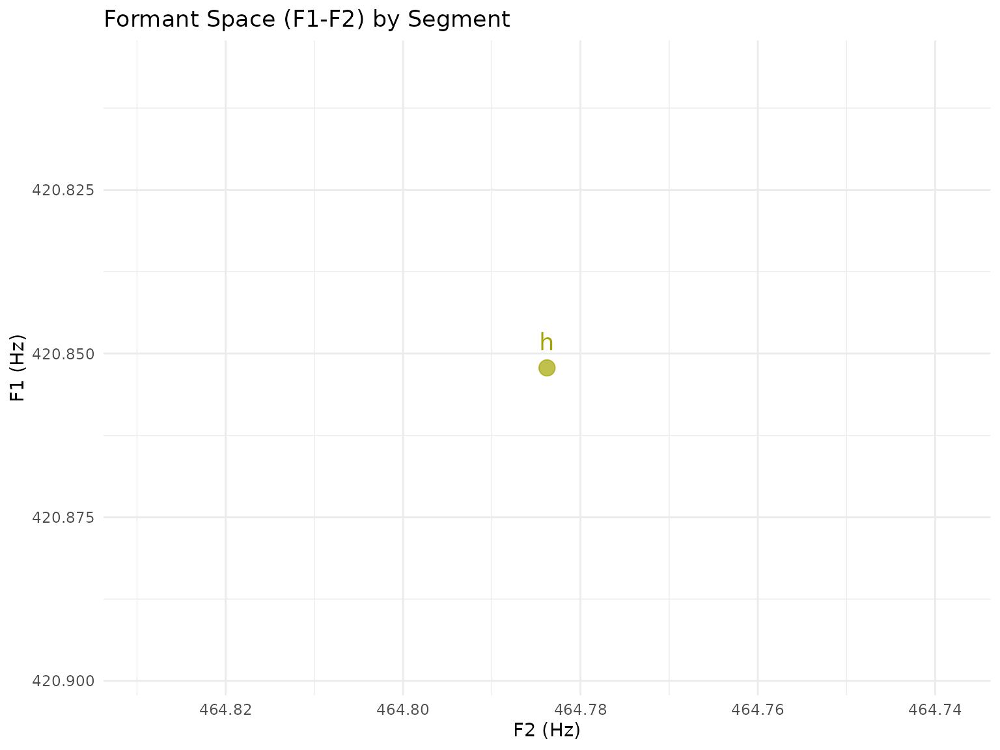
Formant Trajectories
Visualize formant movement over time:
# Extract formant tracks
formant <- sound$to_formant_burg(
time_step = 0.01,
max_number_of_formants = 5,
maximum_formant = 5500
)
# as_data_frame() returns long format: one row per (time, formant number).
# Keep F1-F3 and reshape to wide for a multi-line plot.
formant_df <- formant$as_data_frame()
formant_df <- formant_df[formant_df$formant <= 3, ]
formant_wide <- data.table::dcast(formant_df, time ~ formant, value.var = "frequency")
data.table::setnames(formant_wide, c("1", "2", "3"), c("F1", "F2", "F3"))
# Plot F1-F3 over time
ggplot(formant_wide, aes(x = time)) +
geom_line(aes(y = F1, color = "F1"), linewidth = 1) +
geom_line(aes(y = F2, color = "F2"), linewidth = 1) +
geom_line(aes(y = F3, color = "F3"), linewidth = 1) +
scale_color_manual(
name = "Formant",
values = c("F1" = "#E41A1C", "F2" = "#377EB8", "F3" = "#4DAF4A")
) +
labs(
title = "Formant Trajectories",
x = "Time (s)",
y = "Frequency (Hz)"
) +
theme_minimal()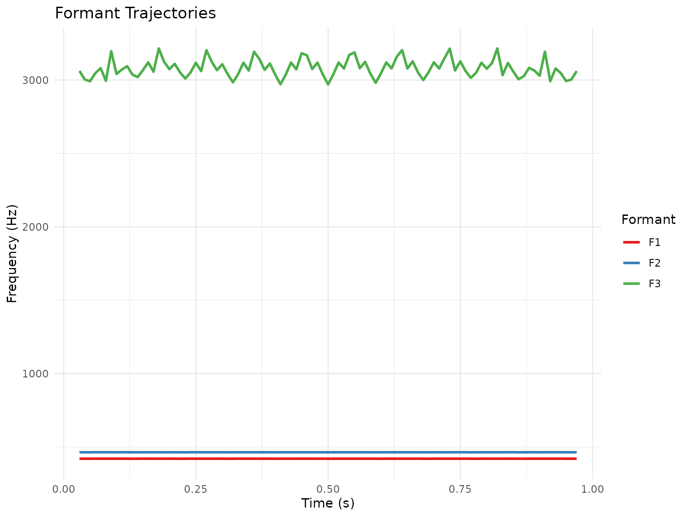
autoplot(formant) and
ggplot() + autolayer(formant) provide the same F1-F3
trajectory plot without manual reshaping.
Pitch and Intensity Visualization
Pitch Contour
# Extract pitch
sound <- Sound$new(system.file("extdata", "test.wav", package = "pladdrr"))
pitch <- sound$to_pitch()
# Convert to data frame
pitch_df <- pitch$as_data_frame()
# Plot pitch contour
ggplot(pitch_df, aes(x = time, y = frequency)) +
geom_line(color = "#1f77b4", linewidth = 0.8) +
geom_point(color = "#1f77b4", size = 1, alpha = 0.5) +
labs(
title = "Fundamental Frequency (F0) Contour",
x = "Time (s)",
y = "Frequency (Hz)"
) +
theme_minimal()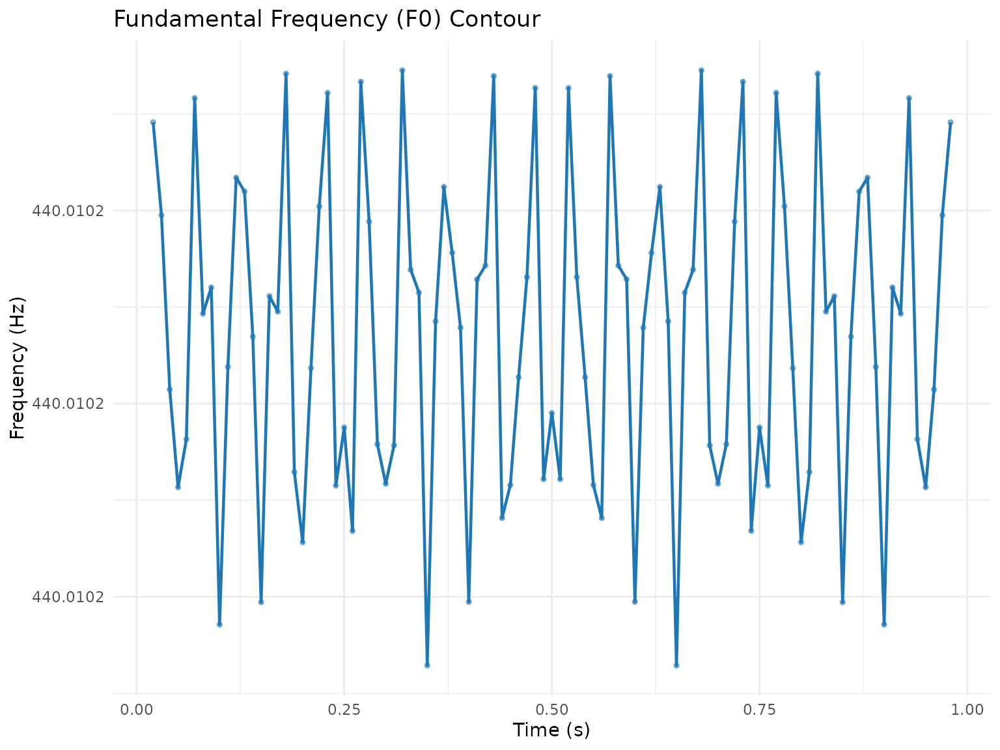
Intensity Contour
# Extract intensity
intensity <- sound$to_intensity()
# Convert to data frame
intensity_df <- intensity$as_data_frame()
# Plot intensity contour
ggplot(intensity_df, aes(x = time, y = intensity_db)) +
geom_line(color = "#ff7f0e", linewidth = 0.8) +
geom_area(fill = "#ff7f0e", alpha = 0.3) +
labs(
title = "Intensity Contour",
x = "Time (s)",
y = "Intensity (dB)"
) +
theme_minimal()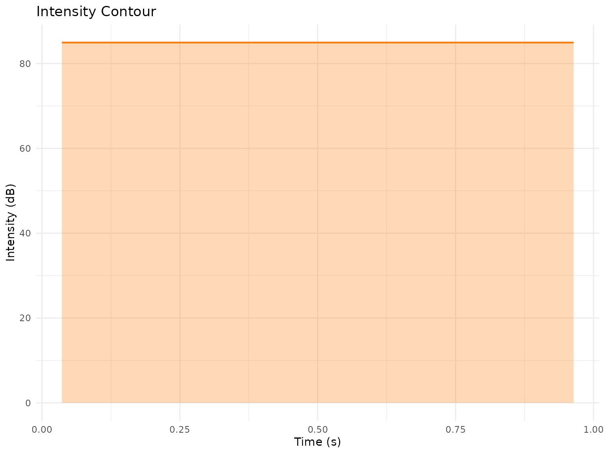
Combined Pitch and Intensity
Pitch and intensity are extracted on different time grids, so
intensity is interpolated onto the pitch time points with
stats::approx() before plotting:
combined <- data.frame(
time = pitch_df$time,
frequency = pitch_df$frequency,
intensity_db = approx(intensity_df$time, intensity_df$intensity_db,
xout = pitch_df$time)$y
)
# Dual-axis plot
ggplot(combined, aes(x = time)) +
geom_line(aes(y = frequency, color = "F0"), linewidth = 0.8) +
geom_line(aes(y = intensity_db * 3, color = "Intensity"), linewidth = 0.8) +
scale_y_continuous(
name = "Frequency (Hz)",
sec.axis = sec_axis(~./3, name = "Intensity (dB)")
) +
scale_color_manual(
name = "",
values = c("F0" = "#1f77b4", "Intensity" = "#ff7f0e")
) +
labs(
title = "Pitch and Intensity",
x = "Time (s)"
) +
theme_minimal() +
theme(legend.position = "top")
#> Warning: Removed 4 rows containing missing values or values outside the scale range
#> (`geom_line()`).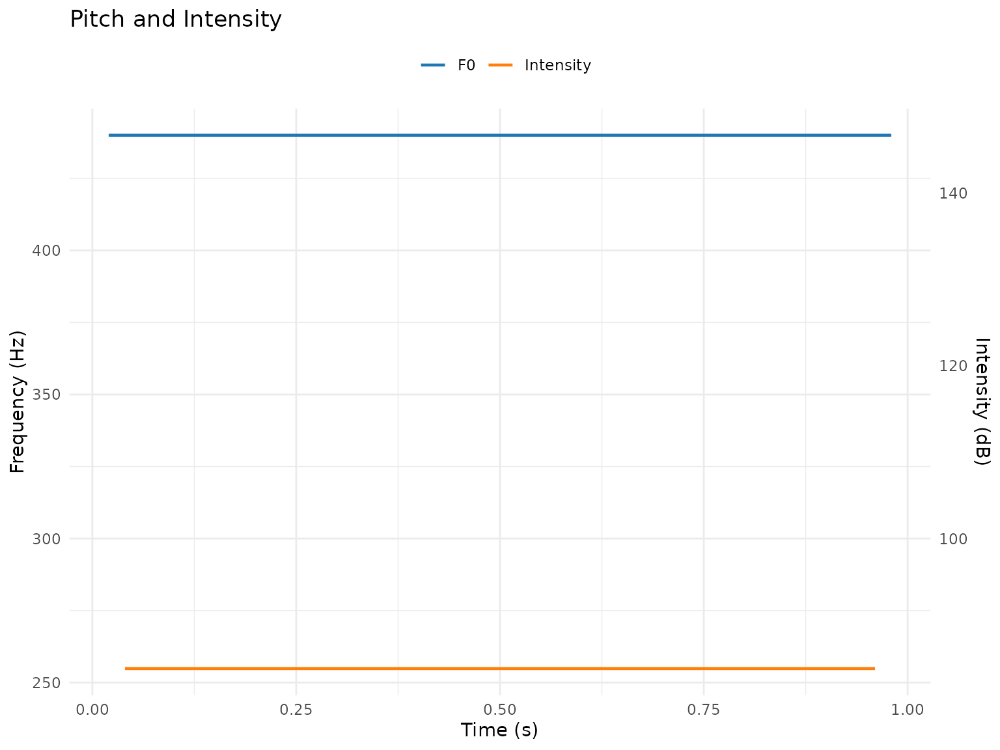
TextGrid Visualization
pladdrr provides autoplot.TextGrid() and
autolayer.TextGrid() methods, so plotting a tier does not
require manually looping over intervals and building
geom_rect()/geom_text() calls.
Annotation Tier Display
# Load TextGrid
tg <- TextGrid$new(system.file("extdata", "test.TextGrid", package = "pladdrr"))
# autoplot() draws the whole TextGrid (all tiers stacked), delegating to the
# base plot.TextGrid() method
autoplot(tg)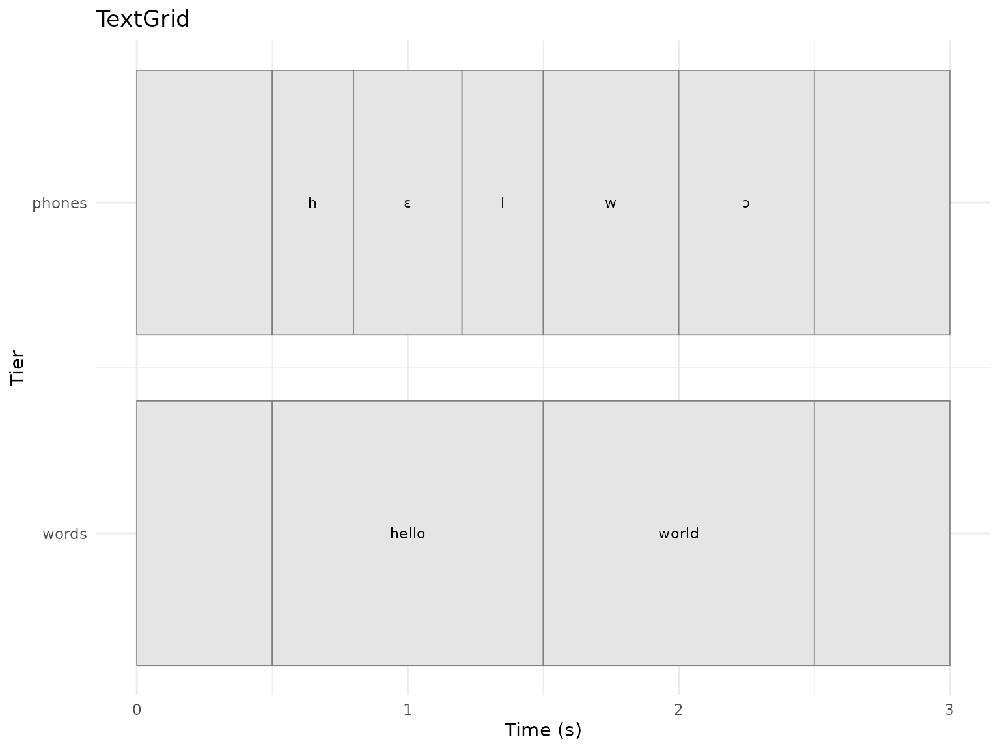
# autolayer() returns a list of geoms for a single tier, for use inside a
# ggplot2 pipeline (e.g. layered over a Sound waveform or spectrogram)
ggplot() +
autolayer(tg, tier = "words", color = "steelblue") +
labs(title = "Word Tier", x = "Time (s)", y = "") +
theme_minimal()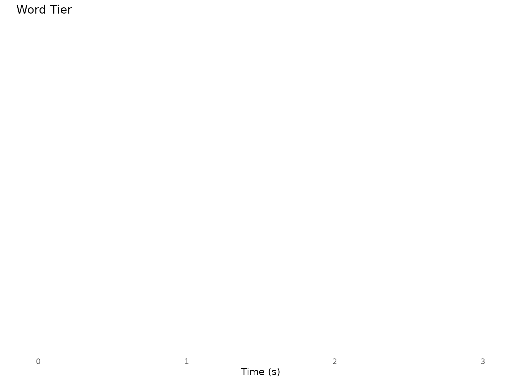
ggplot() +
autolayer(tg, tier = "phones", color = "darkgreen", alpha = 0.4) +
labs(title = "Phone Tier", x = "Time (s)", y = "") +
theme_minimal()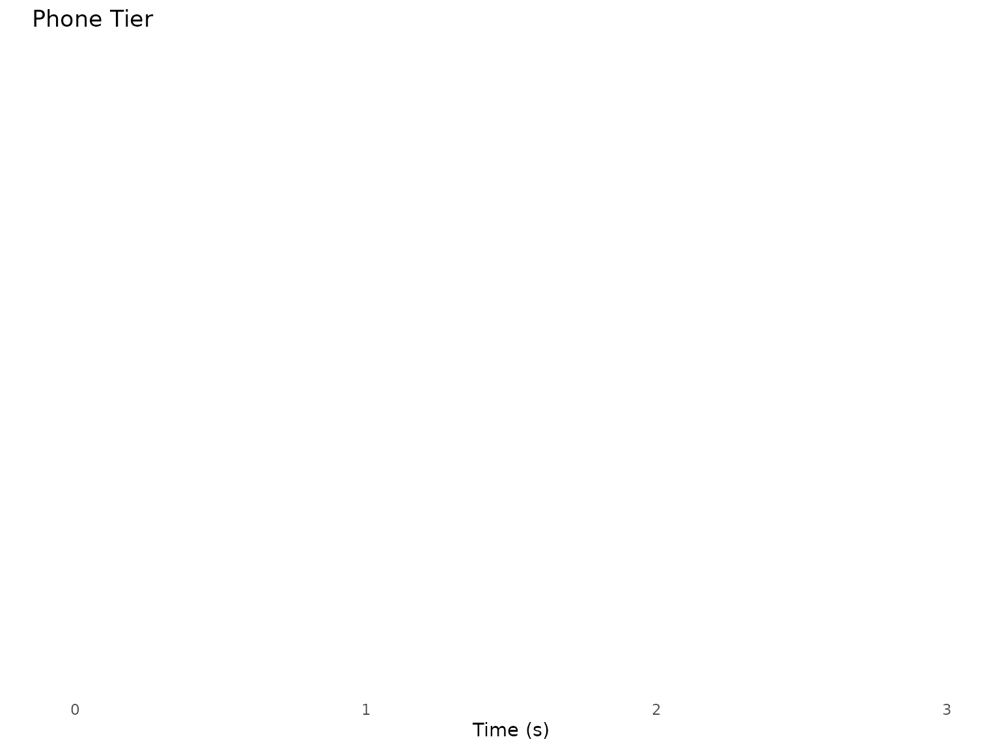
Duration Analysis
# Interval durations for the "phones" tier, via get_all_intervals()
tier_data <- tg$get_all_intervals("phones")
tier_data$duration <- tier_data$end - tier_data$start
# Filter out empty (unlabeled) intervals
tier_data_labeled <- tier_data[tier_data$text != "", ]
# Duration histogram by label
ggplot(tier_data_labeled, aes(x = duration, fill = text)) +
geom_histogram(bins = 10, alpha = 0.7, color = "black") +
facet_wrap(~text, scales = "free_y") +
labs(
title = "Interval Duration Distribution",
x = "Duration (s)",
y = "Count"
) +
theme_minimal() +
theme(legend.position = "none")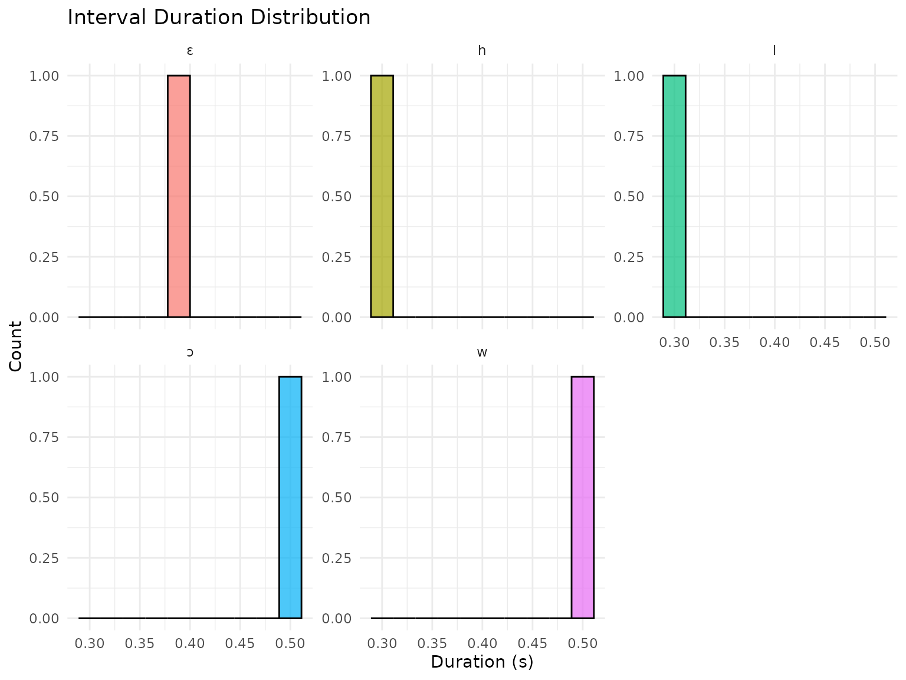
Spectral Visualization
Spectrogram
# Create spectrogram
sound <- Sound$new(system.file("extdata", "test.wav", package = "pladdrr"))
spectrogram <- sound$to_spectrogram(
window_length = 0.005,
max_frequency = 5000,
time_step = 0.002,
frequency_step = 20,
window_shape = "Gaussian"
)
# Convert to matrix for plotting (rows = frequency, columns = time)
spec_matrix <- spectrogram$as_matrix()
time_vec <- seq(0, sound$get_total_duration(), length.out = ncol(spec_matrix))
freq_vec <- seq(0, 5000, length.out = nrow(spec_matrix))
# Long-format data frame for ggplot2 (base R, no reshape dependency)
spec_long <- expand.grid(time = time_vec, frequency = freq_vec)
spec_long$power <- as.vector(t(spec_matrix))
# Plot spectrogram
ggplot(spec_long, aes(x = time, y = frequency, fill = power)) +
geom_tile() +
scale_fill_viridis_c(option = "magma", name = "Power (dB)") +
labs(
title = "Spectrogram",
x = "Time (s)",
y = "Frequency (Hz)"
) +
theme_minimal()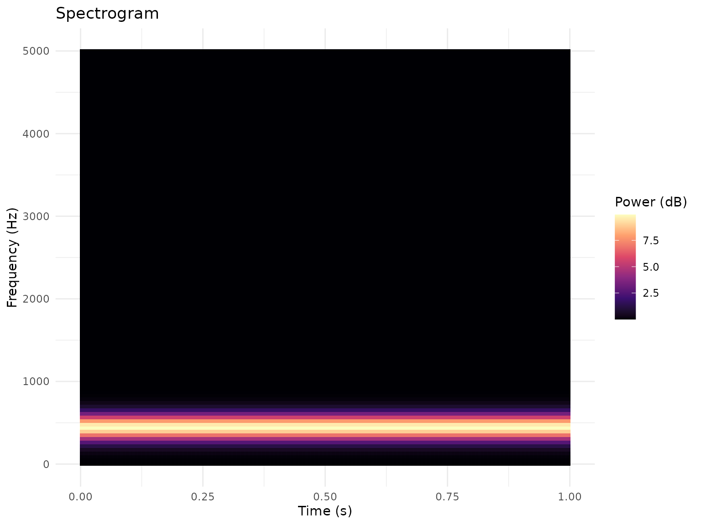
Spectrum
# Create spectrum from sound
spectrum <- sound$to_spectrum(fast = TRUE)
# Convert to data frame
spectrum_df <- spectrum$as_data_frame()
# Plot spectrum
ggplot(spectrum_df, aes(x = frequency, y = power)) +
geom_line(color = "#2ca02c", linewidth = 0.8) +
labs(
title = "Power Spectrum",
x = "Frequency (Hz)",
y = "Power (dB)"
) +
theme_minimal()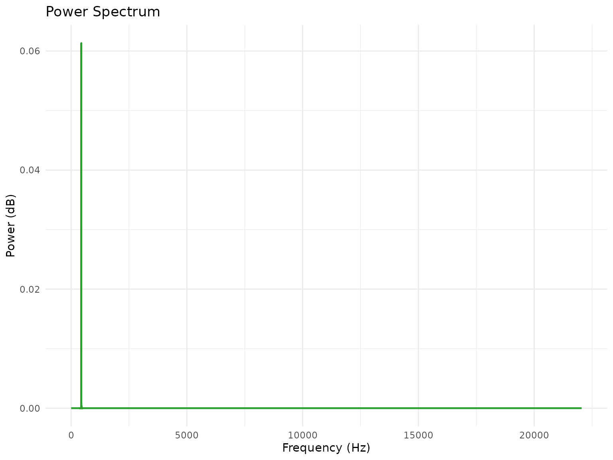
Long-Term Average Spectrum (LTAS)
# Create LTAS
ltas <- sound$to_ltas(bandwidth = 100)
# Convert to data frame
ltas_df <- ltas$as_data_frame()
# Plot LTAS
ggplot(ltas_df, aes(x = frequency, y = power_db)) +
geom_line(color = "#d62728", linewidth = 0.8) +
geom_area(fill = "#d62728", alpha = 0.3) +
labs(
title = "Long-Term Average Spectrum",
x = "Frequency (Hz)",
y = "Power (dB)"
) +
theme_minimal()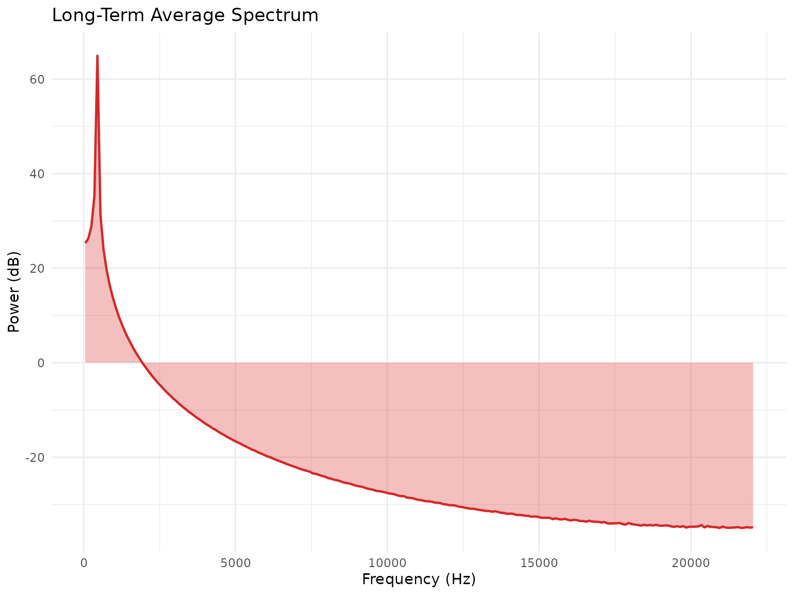
Customization and Theming
Custom Color Schemes
# Define custom color palette
my_colors <- c(
"#E69F00", # Orange
"#56B4E9", # Sky Blue
"#009E73", # Green
"#F0E442", # Yellow
"#0072B2", # Blue
"#D55E00", # Vermillion
"#CC79A7" # Purple
)
# Apply to vowel space plot
ggplot(formant_data, aes(x = F2, y = F1, color = vowel)) +
geom_point(size = 4) +
scale_color_manual(values = my_colors) +
scale_x_reverse() +
scale_y_reverse() +
theme_minimal()
#> Warning: Removed 4 rows containing missing values or values outside the scale range
#> (`geom_point()`).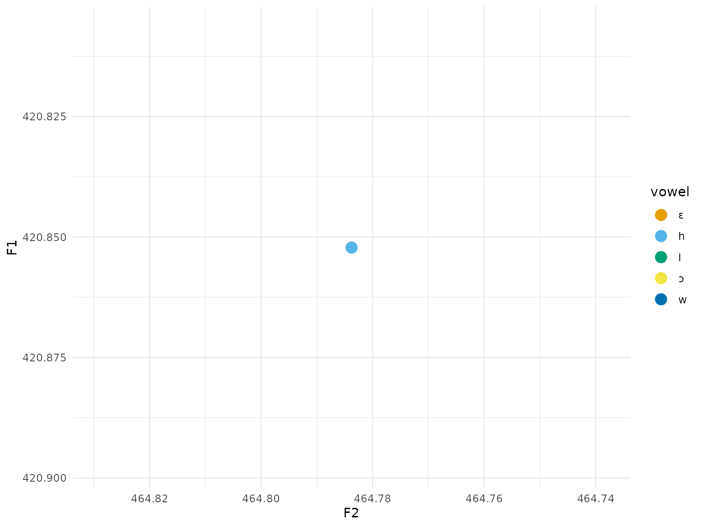
Publication Themes
# Black and white theme for journals
ggplot(pitch_df, aes(x = time, y = frequency)) +
geom_line() +
labs(
title = "Fundamental Frequency",
x = "Time (s)",
y = "F0 (Hz)"
) +
theme_bw() +
theme(
panel.grid.minor = element_blank(),
text = element_text(size = 12, family = "serif")
)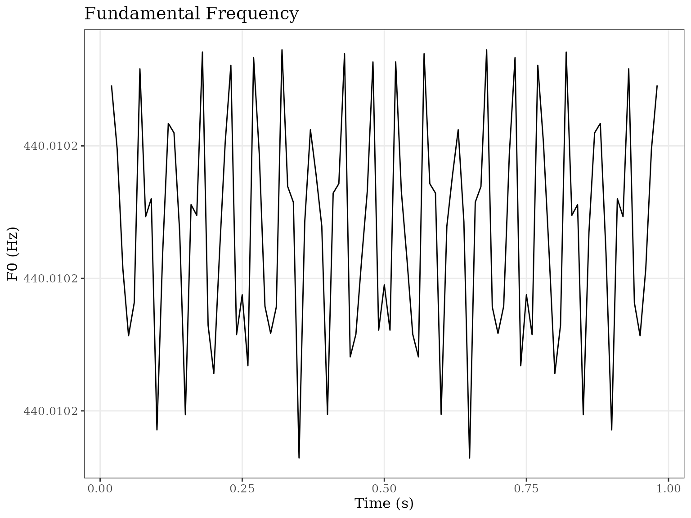
Multi-Panel Figures
library(gridExtra)
# Create individual plots
p1 <- ggplot(pitch_df, aes(x = time, y = frequency)) +
geom_line() +
labs(title = "Pitch", x = "Time (s)", y = "F0 (Hz)") +
theme_minimal()
p2 <- ggplot(intensity_df, aes(x = time, y = intensity_db)) +
geom_line() +
labs(title = "Intensity", x = "Time (s)", y = "dB") +
theme_minimal()
p3 <- ggplot(formant_wide, aes(x = time)) +
geom_line(aes(y = F1, color = "F1")) +
geom_line(aes(y = F2, color = "F2")) +
labs(title = "Formants", x = "Time (s)", y = "Hz") +
theme_minimal()
# Arrange in grid
grid.arrange(p1, p2, p3, nrow = 3)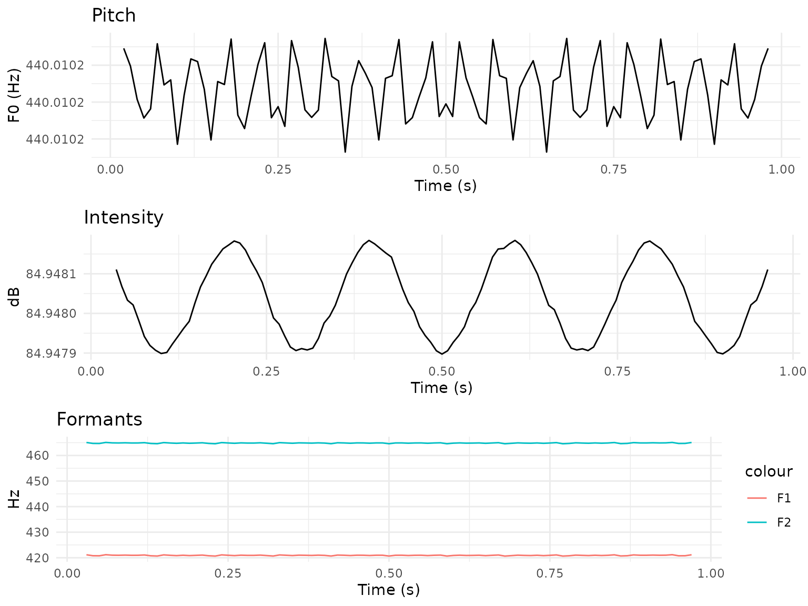
Saving Plots
High-Resolution Output
# Save as PDF (vector graphics)
ggsave("figure1.pdf", plot = p1, width = 8, height = 6, units = "in")
# Save as PNG (high DPI)
ggsave("figure1.png", plot = p1, width = 8, height = 6, dpi = 300)
# Save as SVG (editable vector)
ggsave("figure1.svg", plot = p1, width = 8, height = 6)
# Save as TIFF (for journals)
ggsave("figure1.tiff", plot = p1, width = 8, height = 6, dpi = 300, compression = "lzw")Summary
This vignette covered:
-
Cepstral analysis:
plot_powercepstrum(),plot_powercepstrogram(),plot_cpp_timeseries(),create_cepstrum_report() -
Formant analysis: F1-F2 formant space and F1-F3
trajectories from
Formant$as_data_frame() -
Prosodic features: pitch and intensity contours
from
Pitch$as_data_frame()andIntensity$as_data_frame() -
Annotation: TextGrid tier display via
autoplot.TextGrid()andautolayer.TextGrid() -
Spectral analysis: spectrograms, spectra, and LTAS
from the corresponding
as_matrix()/as_data_frame()methods
All examples produce ordinary ggplot2 objects that can
be themed, combined with gridExtra::grid.arrange(), and
saved with ggsave().
For more information on specific acoustic analyses, see:
-
vignette("getting-started")- Basic workflow -
vignette("integrated-phonetic-analysis")- Multi-parameter analysis -
vignette("textgrid-workflows")- Annotation-based analysis -
vignette("autoplot-autolayer")- Full reference for theautoplot/autolayermethods